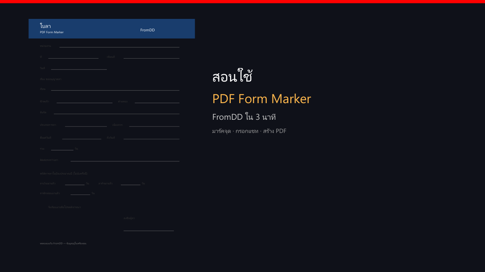

ติดตั้ง Setup ชุดเดียว ไม่มีตัวทดลองแยกไฟล์
ใบที่มีอยู่แล้ว กรอกได้ในนาที ไม่ใช่สิบนาที
ปักช่องว่างครั้งเดียว แล้วกรอกซ้ำได้เรื่อย ๆ สร้าง PDF ข้อมูลอยู่เครื่องคุณ — ไม่คิดรายเดือน ไม่ส่งไฟล์ไปคลาวด์
ใช้ฟอร์มตัวอย่างในโปรแกรมได้เลย ยังไม่ต้องมีคีย์
รหัส 16 ตัวอยู่แถบไลเซนต์ มีปุ่มคัดลอก
หลังโอนแล้วส่งสลิปกับรหัสเครื่อง จะได้คีย์กลับ
เปิดใช้ในแอป ใช้ฟอร์มของโรงเรียนได้ ไม่ต้องติดตั้งใหม่
คลิปสอนการใช้งาน
youtube.com/watch?v=FormDD-howto คลิปตัวอย่าง

เปิดโปรแกรม แล้วเลือกใบลา.pdf
PDF ของโรงเรียนหรือหน่วยงาน โหมดทดลองใช้ฟอร์มตัวอย่างก่อน
คลิกแต่ละช่องว่าง จุดจำไว้ว่าข้อความควรอยู่ตรงไหน
พิมพ์หรือใช้แชท ได้ไฟล์พร้อมใช้ ข้อมูลอยู่เครื่องนี้